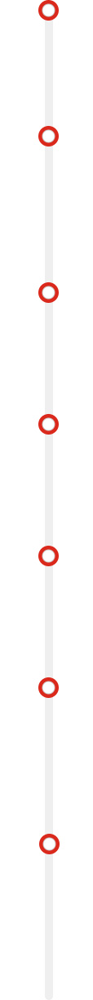
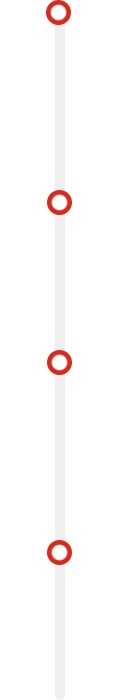
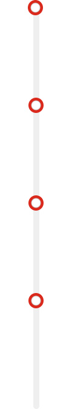

HOME > 연구소안내 > 연혁
연혁
2010~현재
글로벌 식품연구소 도약
-
- 2018
- 6월 연구소 New 비전 「Better Food, Better Life」 선포
-
- 2017
- 6월 베트남 R&D 센터 설립
- 6월 마곡 신축 연구소 이전
-
- 2016
- 6월 인도네시아 R&D 센터 설립
-
- 2015
- 7월 5부문 1센터 24개팀 (대팀제 추가)
-
- 2013
- 7월 5부문 1센터 25개팀 (대팀제로 변경)
-
- 2011
- 5월 5부문 1센터 : 29개팀
- 1월 파스퇴르 유업 인수에 따른 유가공팀 신설
-
- 2010
- 9월 롯데주류BG 주류 연구팀 편입
- 8월 중국연구소 설립
2000~2009
글로벌 식품연구소로의기틀정립
-
- 2009
- 4월 그룹비전과 연계하여 연구소 비전 선포
- 1월 안전센터 신설
-
- 2007
- 5월 3연구실 커피담당 문래동 실험실 완공 및 이전 완료
-
- 2006
- 6월 상품시험연구소 3팀 8담당으로 개편
- 6월 제23주년 창립기념식 및 롯데중앙연구소 비전 선포식 시행
-
- 2005
- 9월 상품시험연구소와 롯데슈퍼 상품연구소 통합
1980~1999
종합식품 연구소 창립 및 연구개발의 성장기
-
- 1997
- 12월 KOLAS 공인시험기관 지정 (국립기술품질원:20항목)
-
- 1993
- 10월 강원도 횡계 원료(감자) 개발사무실 개소
-
- 1989
- 12월 연구소 양평동 신축 건물 준공 및 이전(9개층, 4,500평)
-
- 1983
- 6월 과학기술처에 기업부설연구소 등록 완료
- 6월 롯데그룹중앙연구소 창립(5실 15팀, 77명)